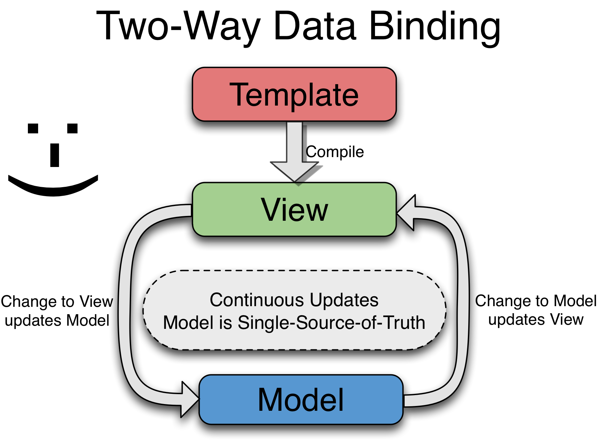
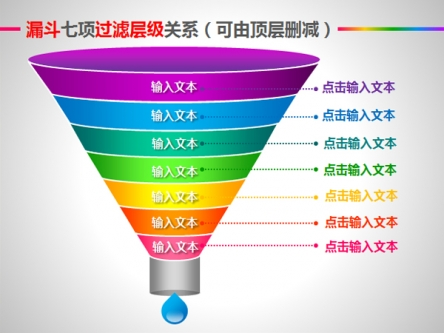
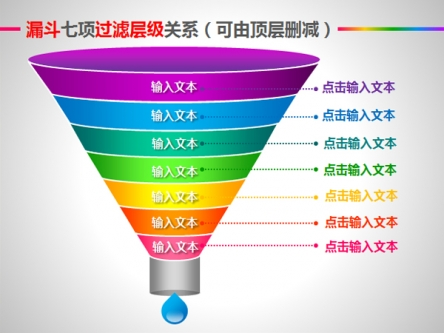

单例模式
服务具有唯一的名字，所以无论这个服务被注入到任何地方，对象始终只有一个实例。（银角大王举起葫芦说：我叫你一声，你敢答应吗）啥意思？
依赖注入
你不必关心怎么创建一个实例，只需要声明自己需要哪个服务，就会自动送到你碗里来。（咦，这不是哆啦A梦的百宝袋么？）啥意思？
方式灵活
按照每个程序猿的编程习惯，你可以选择方式的菜谱来自定义服务。（Angular给你准备的5道菜：Value, Factory, Service, Provider and Constant）啥意思？
往期剧情回顾
MVC模式
双向绑定
依赖注入

本期英雄介绍
版本代号：1.3.7
版本名称：leaky-obstruction
发布时间：2014.12.16
源码大小： 25811行 108568字 压缩后122KB
function $AnchorScrollProvider() {
var autoScrollingEnabled = true;
this.disableAutoScrolling = function() {
autoScrollingEnabled = false;
};
this.$get = ['$window', '$location', '$rootScope', function($window, $location, $rootScope) {
var document = $window.document;
function getFirstAnchor(list) {
var result = null;
Array.prototype.some.call(list, function(element) {
if (nodeName_(element) === 'a') {
result = element;
return true;
}
});
return result;
}
function getYOffset() {
var offset = scroll.yOffset;
if (isFunction(offset)) {
offset = offset();
} else if (isElement(offset)) {
var elem = offset[0];
var style = $window.getComputedStyle(elem);
if (style.position !== 'fixed') {
offset = 0;
} else {
offset = elem.getBoundingClientRect().bottom;
}
} else if (!isNumber(offset)) {
offset = 0;
}
return offset;
}
function scrollTo(elem) {
if (elem) {
elem.scrollIntoView();
var offset = getYOffset();
if (offset) {
var elemTop = elem.getBoundingClientRect().top;
$window.scrollBy(0, elemTop - offset);
}
} else {
$window.scrollTo(0, 0);
}
}
function scroll() {
var hash = $location.hash(), elm;
// empty hash, scroll to the top of the page
if (!hash) scrollTo(null);
// element with given id
else if ((elm = document.getElementById(hash))) scrollTo(elm);
// first anchor with given name :-D
else if ((elm = getFirstAnchor(document.getElementsByName(hash)))) scrollTo(elm);
// no element and hash == 'top', scroll to the top of the page
else if (hash === 'top') scrollTo(null);
}
if (autoScrollingEnabled) {
$rootScope.$watch(function autoScrollWatch() {return $location.hash();},
function autoScrollWatchAction(newVal, oldVal) {
// skip the initial scroll if $location.hash is empty
if (newVal === oldVal && newVal === '') return;
jqLiteDocumentLoaded(function() {
$rootScope.$evalAsync(scroll);
});
});
}
return scroll;
}];
}
终于读完了一段源码，想不想动手看看效果 -->
- 肖大叔提示1：你要的只是一件产品，别把生产产品的整个工厂都搬过来了！
- 肖大叔提示2：疑人不用，用人不疑。注入服务也是要承担风险的！
- 肖大叔提示3：锚个链接都这么麻烦，那个傻逼会用你，喵了个咪！（"#/"））
这个内容太复杂了，不如直接玩游戏 -->

回家过年啦，你要去哪？
- {{city}}
- 肖大叔提示1：angular动画在应用启动的时候就会跑起来吗？ 不是的，它们都在等待着触发事件
-
肖大叔提示2：ngRepeat、ngView、ngIf等指令都可以加动画，至于具体对应那些动画，需要查询API :
- 肖大叔提示3：有木有觉得ngAnimate特别好玩？ 这其实是赛贝尔曲线的功劳！更多精彩点击： http://www.nganimate.org/
//提取几段代码来分析
function $CompileProvider($provide, $$sanitizeUriProvider) {
var hasDirectives = {},
Suffix = 'Directive',
COMMENT_DIRECTIVE_REGEXP = /^\s*directive\:\s*([\w\-]+)\s+(.*)$/,
CLASS_DIRECTIVE_REGEXP = /(([\w\-]+)(?:\:([^;]+))?;?)/,
ALL_OR_NOTHING_ATTRS = makeMap('ngSrc,ngSrcset,src,srcset'),
REQUIRE_PREFIX_REGEXP = /^(?:(\^\^?)?(\?)?(\^\^?)?)?/;
var EVENT_HANDLER_ATTR_REGEXP = /^(on[a-z]+|formaction)$/;
function parseIsolateBindings(scope, directiveName) {};
this.directive = function registerDirective(name, directiveFactory){};
this.aHrefSanitizationWhitelist = function(regexp){};
this.imgSrcSanitizationWhitelist = function(regexp){};
var debugInfoEnabled = true;
this.debugInfoEnabled = function(enabled){};
this.$get = [
'$injector', '$interpolate', '$exceptionHandler', '$templateRequest', '$parse',
'$controller', '$rootScope', '$document', '$sce', '$animate', '$$sanitizeUri',
function($injector, $interpolate, $exceptionHandler, $templateRequest, $parse,
$controller, $rootScope, $document, $sce, $animate, $$sanitizeUri) {};
- 肖大叔提示1：调用var directive = $injector.invoke(directiveFactory)得到一个对象，包括compile、priority、index、restrict等属性（定义指令）。
- {{debug}}
- 肖大叔提示2：这个东西不仅有强身健体，抵御外敌的本领，还能做出放下武器，自废武功的动作，是有那么犀利哈！
再来看看回家过年的例子：
- {{city}}
- 肖大叔提示1：控制器还可以绑定到window，这下子涨姿势了！
现实中的过滤器是这样的：
我们可以简化想象成酱紫：

而写成代码，就成为这个鬼样了：
我们可以简化想象成酱紫：

$FilterProvider.$inject = ['$provide'];
function $FilterProvider($provide) {
var suffix = 'Filter';
function register(name, factory) {
if (isObject(name)) {
var filters = {};
forEach(name, function(filter, key) {
filters[key] = register(key, filter);
});
return filters;
} else {
return $provide.factory(name + suffix, factory);
}
}
this.register = register;
this.$get = ['$injector', function($injector) {
return function(name) {
return $injector.get(name + suffix);
};
}];
register('currency', currencyFilter);
register('date', dateFilter);
register('filter', filterFilter);
register('json', jsonFilter);
register('limitTo', limitToFilter);
register('lowercase', lowercaseFilter);
register('number', numberFilter);
register('orderBy', orderByFilter);
register('uppercase', uppercaseFilter);
}
- 肖大叔提示2：肖会只是一只程序猿，而非国家政要，别河蟹我啊(┬＿┬)
互联网时代，我们必须了解一些数据请求：
var defaults = this.defaults = {
// transform incoming response data
transformResponse: [defaultHttpResponseTransform],
// transform outgoing request data
transformRequest: [function(d) {
return isObject(d) && !isFile(d) && !isBlob(d) && !isFormData(d) ? toJson(d) : d;
}],
// default headers
headers: {
common: {
'Accept': 'application/json, text/plain, */*'
},
post: shallowCopy(CONTENT_TYPE_APPLICATION_JSON),
put: shallowCopy(CONTENT_TYPE_APPLICATION_JSON),
patch: shallowCopy(CONTENT_TYPE_APPLICATION_JSON)
},
xsrfCookieName: 'XSRF-TOKEN',
xsrfHeaderName: 'X-XSRF-TOKEN'
};
this.$get = ['$httpBackend', '$browser', '$cacheFactory', '$rootScope', '$q', '$injector',
function($httpBackend, $browser, $cacheFactory, $rootScope, $q, $injector) {};
function $http(requestConfig){};
玩一下useApplyAsync这个方法
package:{{package}}
package:{{package}}
- 肖大叔提示1：最底层还是用js的XMLHttpRequest对象，是否想到了当年红遍一时的ajax技术？
- 肖大叔提示2：再往上层封装了$resource，这是一种RESTful的方式，好像又更进一步了有木有？
- 肖大叔提示3：$httpProvider.useApplyAsync是1.3的新特性，阻止自动渲染，适合在大应用使用
- 肖大叔提示4：Rick，为嘛你的实验不成功呢？ 凡人，向大神求助吧！
哈哈，下面我们看个很有意思的东东 -- 篡改！
But，我们不玩二师兄和金大帅，我们篡改angular语法，如：
肖肖hello会会
But，我们不玩二师兄和金大帅，我们篡改angular语法，如：
肖肖hello会会
- 尼玛，这篡改简直毁三观啊！吓尿了！！
- 非程序猿 请勿模仿
function $LogProvider() {
var debug = true,
self = this;
this.$get = ['$window', function($window) {
return {
log: consoleLog('log'),
info: consoleLog('info'),
warn: consoleLog('warn'),
error: consoleLog('error'),
debug: (function() {
var fn = conso
return function() {
if (debug) {
fn.apply(self, arguments);
}
};
}())
};
function formatError(arg) {
if (arg instanceof Error) {
if (arg.stack) {
arg = (arg.message && arg.stack.indexOf(arg.message) === -1)
? 'Error: ' + arg.message + '\n' + arg.stack
: arg.stack;
} else if (arg.sourceURL) {
arg = arg.message + '\n' + arg.sourceURL + ':' + arg.line;
}
}
return arg;
}
function consoleLog(type) {
var console = $window.console || {},
logFn = console[type] || console.log || noop,
hasApply = false;
try {
hasApply = !!logFn.apply;
} catch (e) {}
if (hasApply) {
return function() {
var args = [];
forEach(arguments, function(arg) {
args.push(formatError(arg));
});
return logFn.apply(console, args);
};
}
return function(arg1, arg2) {
logFn(arg1, arg2 == null ? '' : arg2);
};
}
向大家打个招呼吧
- 肖大叔提示1：只是借用了console的方法，偷点东西来不算啥本事吧？
- 肖大叔提示2：你要是能劫持系统的控制台，不让它说话，那你丫的才够狠！（可惜不能）
//初始化变量
var TTL = 10;
var $rootScopeMinErr = minErr('$rootScope');
var lastDirtyWatch = null;
var applyAsyncId = null;
//构造子函数
this.$get = ['$injector', '$exceptionHandler', '$parse', '$browser',
function($injector, $exceptionHandler, $parse, $browser) {
//很重要的一个模型
function Scope() {
this.$id = nextUid();
this.$$phase = this.$parent = this.$$watchers =
this.$$nextSibling = this.$$prevSibling =
this.$$childHead = this.$$childTail = null;
this.$root = this;
this.$$destroyed = false;
this.$$listeners = {};
this.$$listenerCount = {};
this.$$isolateBindings = null;
}
Scope.prototype = {
constructor: Scope,
$new: function(isolate, parent){},
$watch: function(watchExp, listener, objectEquality){},
$digest: function(){},
$destroy: function(){},
$eval: function(expr, locals){},
$apply: function(expr){},
$on: function(name, listener){},
$emit: function(name, args){},
$broadcast: function(name, args){}
//还有好多好多常用东西，原来都定义在这里了呀！
}
}
- 肖大叔提示1：射人先射马，擒贼先擒王，想找掌控大局就要捉住它的老根！
- 肖大叔提示2：Increasing the TTL could have performance implications, so you should not change it without proper justification.
- 肖大叔提示3：说人话！ 好吧，通俗来讲，提高这个数值可能会卡死你，所以没有特殊的需要最好不要动digestTtl这个配置！
急急如律令，图片拿给我！
{{myPic.name}} -- >
- 肖大叔提示1：跨域是一个很蛋疼了问题了，折磨了求求同学好几个月
- 肖大叔提示2：按照文档说明，不仅HTML，连js和CSS也能够被信任，那么半脱机版是不是要轻松多了？
-
（之前江苏农行的事情让大家很蛋疼吧？）
- 除此之外，还可以通过消毒的方式，减轻烦恼：这就是ngSanitize要做的事啦！ <(￣▽￣)> 哇哈哈…
ngLocale模块：高大上！
（插播广告：五星红旗 迎风飘扬 胜利歌声多么嘹亮~~）
货币：{{ 1000000 | currency }}
数字：{{ 1000000 | number }}
默认日期：{{ nowTime | date }}
自定义日期：{{ nowTime | date:'yyyy-MM-dd HH:mm:ss' }}
$q服务：神马是promise?

说得跟真的一样！你特么在逗我！这种情况本可用callback机制轻松解决掉，就像这样：
step1(function (value1) {
step2(value1, function(value2) {
step3(value2, function(value3) {
step4(value3, function(value4) {
// Do something with value4
});
});
});
});
But!
优雅、简洁、易维护
Q.fcall(promisedStep1)
.then(promisedStep2)
.then(promisedStep3)
.then(promisedStep4)
.then(function (value4) {
// Do something with value4
})
.catch(function (error) {
// Handle any error from all above steps
})
.done();
好啦，别生气o(∩_∩)o 我都听你就是了~~ 进入Q世界
- $q is integrated with the $rootScope.Scope Scope model observation mechanism in angular, which means faster propagation of resolution or rejection into your models and avoiding unnecessary browser repaints, which would result in flickering UI.
- Q has many more features than $q, but that comes at a cost of bytes. $q is tiny, but contains all the important functionality needed for common async tasks.
易有太极，是生两仪，两仪生四象，四象生八卦！-- 跟上时代的脚步，与国际接轨。-

- "With a promise library, you can flatten the pyramid." -- Kris Kowal
- 有了这个承诺库，你可以铲平金字塔！ -- 外国人都这么狂妄？！
曲终人散
终于啃完了， 是不是要随手转发正能量？